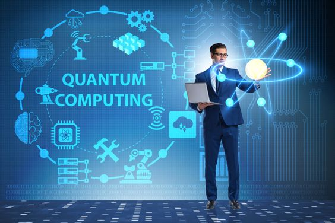

The Rise of Quantum Computing
In the ever-evolving world of technology, one trend that has been gaining significant traction is Quantum Computing. This revolutionary technology leverages the principles of quantum mechanics to process information. Unlike traditional computers that use bits (0s and 1s) for processing, quantum computers use quantum bits, or qubits, which can exist in multiple states at once. This allows quantum computers to process a vast number of calculations simultaneously.
Quantum computing has the potential to revolutionize various sectors. In healthcare, it could lead to the discovery of new drugs by analyzing and simulating molecular structures in ways that were previously impossible. In finance, quantum algorithms could optimize trading strategies, portfolio management, and risk assessment.
However, the technology is still in its nascent stages, and there are numerous challenges to overcome, including maintaining qubit stability and finding practical applications. Despite these challenges, tech giants like IBM, Google, and Microsoft are heavily investing in quantum computing research, indicating a promising future for this technology.
In conclusion, the trajectory of quantum computing heralds an era of profound transformation across numerous industries. As we delve deeper into its intricacies and potential applications, it becomes increasingly evident that quantum computing stands at the vanguard of technological innovation, poised to revolutionize the way we approach computational problems.
At its current developmental stage, quantum computing represents both a challenge and an opportunity. While significant strides have been made in terms of theoretical understanding and experimental implementation, the field remains in its infancy, with many obstacles yet to be overcome. However, the sheer promise it holds is unparalleled, igniting fervent interest and investment from academia, industry, and governments worldwide.
One of the most compelling aspects of quantum computing is its capacity to tackle problems that have long confounded classical computers. From cryptography and cybersecurity to drug discovery and materials science, the potential applications span a breathtaking array of disciplines. Quantum algorithms promise exponential speedups for certain tasks, offering a tantalizing glimpse into a future where currently intractable problems become solvable with unprecedented efficiency.
Moreover, the advent of quantum supremacy—the milestone at which a quantum computer outperforms the most powerful classical supercomputers—marks a pivotal moment in the evolution of computing. While the achievement itself is significant, its implications reverberate far beyond the realm of academia, signaling a seismic shift in the technological landscape.
Indeed, the ramifications of widespread quantum computing adoption are profound. Industries ranging from finance and healthcare to manufacturing and logistics stand to benefit immensely from quantum-powered optimizations and advancements. Supply chain management, for instance, could be revolutionized through quantum algorithms capable of optimizing routes and logistics with unparalleled precision, leading to substantial cost savings and efficiency gains.
However, alongside its transformative potential, quantum computing also presents unique challenges. Chief among these is the issue of error correction, as quantum systems are highly susceptible to decoherence and noise. Developing robust error-correction techniques is paramount to realizing the full potential of quantum computing and ensuring the reliability of results.
Furthermore, the ethical and societal implications of quantum computing merit careful consideration. As with any powerful technology, questions of accessibility, equity, and security loom large. Ensuring that the benefits of quantum computing are equitably distributed and that safeguards are in place to mitigate potential risks is essential to fostering a responsible and inclusive technological future.
In conclusion, while quantum computing is still a developing field, its potential impact on various industries makes it a trending topic in technology today. As we continue to explore and understand the quantum world, we may be on the brink of the next technological revolution—one that promises to redefine the boundaries of what is possible and reshape the fabric of our society in ways we are only beginning to imagine. With concerted effort, collaboration, and foresight, we have the opportunity